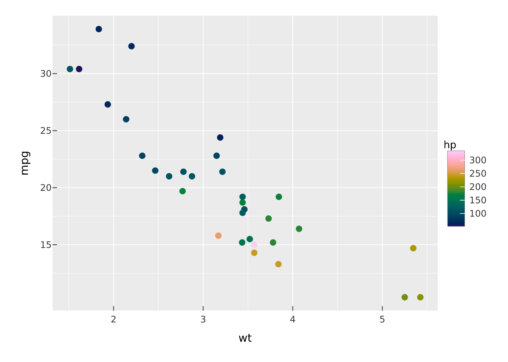
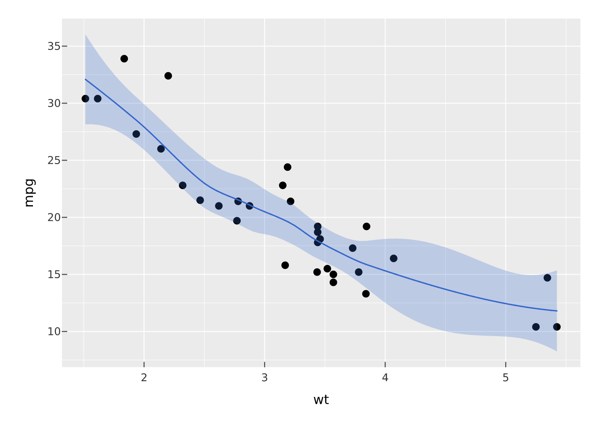
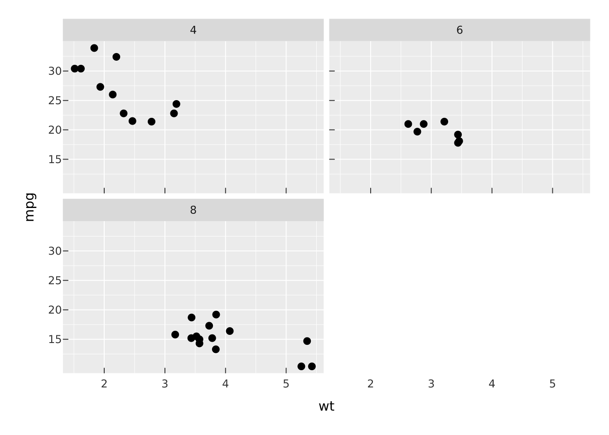

# install.packages("pak")
pak::pak("r-vellum/vellumplot")vellumplot is a declarative, pipe-first grammar of graphics built on the vellum backend. You describe a plot as an inspectable, serializable spec; nothing is drawn until the spec is compiled into a vellum scene and rendered.
Install
vellumplot compiles a Rust crate (inside vellum), so you need a Rust toolchain (cargo/rustc) on your machine alongside R. With that in place:
A first plot
Start with vplot() on a data frame, then add a mark. Encodings (x, y, color, …) are tidy-eval expressions evaluated against the data.
library(vellumplot)
vplot(mtcars) |>
mark_point(x = wt, y = mpg, color = hp) |>
scale_color_continuous()
Printing a spec draws it into the plots pane (and embeds in a knitr/Quarto chunk), like ggplot2.
Layering marks
Add more marks to the same panel; scales train across every layer.
vplot(mtcars) |>
mark_point(x = wt, y = mpg) |>
mark_smooth(x = wt, y = mpg)
Faceting
Split into a grid of panels with shared or free scales.
vplot(mtcars) |>
mark_point(x = wt, y = mpg) |>
facet_wrap(~cyl)
The spec is just data
Nothing is drawn until the spec is compiled. summary() shows its structure without rendering.
summary(vplot(mtcars) |> mark_point(x = wt, y = mpg, color = hp))
#> <PlotSpec> 32x11 (11 columns), page 6x4 in
#>
#> ── layers
#> • mark_point(x = wt, y = mpg, color = hp)Rendering to a file
render_plot() writes the compiled scene; the format follows the file extension.
p <- vplot(mtcars) |> mark_point(x = wt, y = mpg)
render_plot(p, "cars.png")Where to next
- Reference: every mark, scale, coord, facet, theme, and effect.
- vellum: the graphics backend vellumplot compiles into.
- vellumwidget: turn a scene into an interactive HTML widget.
- vellumverse: install and attach the whole ecosystem in one step.